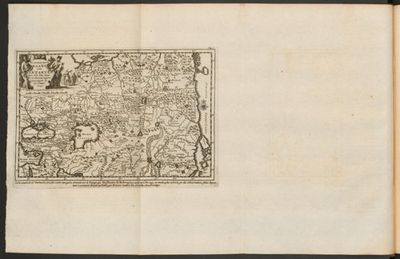

Accurate Map of Tartary, as travelled through by W. de Rubruquis in the year 1253. (Exact map of Tartary, with the routes marked, based on the voyage William of Rubruck made there in the year 1253, and made more complete by observations made since; very recently given to the public by Pieter van der Aa, at Leiden, with privilege.), by Rubruck and van der Aa, 1735. Image: e-rara. One of the 137 maps of Tartary in the TARTARY Project's collection at HKUST, catalogued on tartary.vercel.app. Its texts have not been transcribed yet.